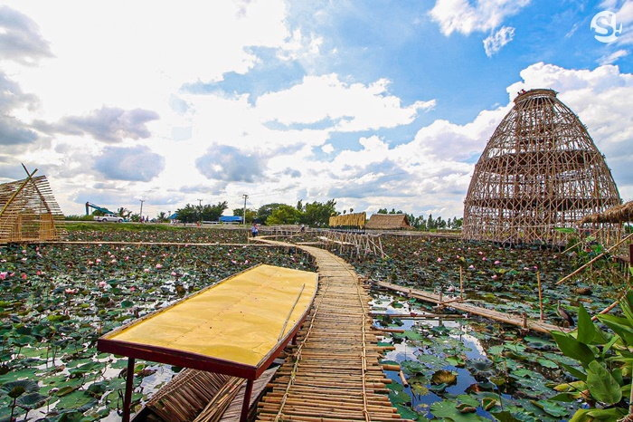
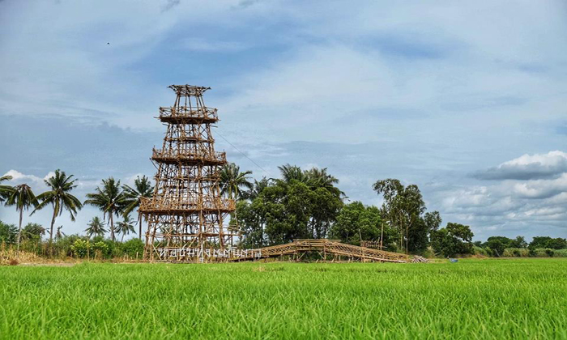
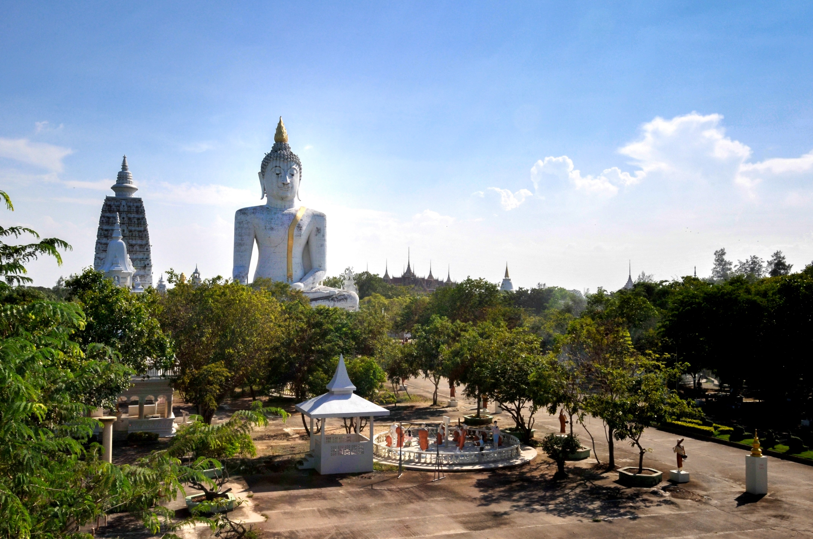

สถานที่ท่องเที่ยวของอำเภอสองพี่น้อง

ตลาดน้ำสะพานโค้ง
ตลาดน้ำสะพานโค้ง สุ่มปลายักษ์ จุดเช็กอินสุดเก๋แห่งสุพรรณบุรี ตั้งอยู่ในอำเภอสองพี่น้อง ได้บรรยากาศแบบธรรมชาติ
พร้อมมุมถ่ายรูปสวยหลายมุมทั้งสุ่มปลายักษ์สะพานทางเดินไม้ไผ่ที่โค้งไปมาท่ามกลางทุ่งดอกบัว
มีร้านขายอาหารของชาวบ้านที่ขายอยู่ในตลาดราคาย่อมเยาว์ข้ามสะพานไปจะพบกับคาเฟ่เจดีย์
ที่ตั้งอยู่ริมน้ำมองเห็นวิวของตลาดและสุ่มปลายักษ์ที่อยู่ฝั่งตรงกันข้าม
ตำแหน่งที่ตั้ง

หอชมทุ่งบ้านต้นตาล
หอชมทุ่งบ้านต้นตาล มีลักษณะคล้ายหอคอยโดยใช้ไม้ไผ่ในการก่อสร้าง มีรูปทรงแปดเหลี่ยมความสูงกว่า 20 เมตร
โดยชาวบ้าน ได้ร่วมแรงร่วมใจกันสร้างขึ้นตามแบบภูมิปัญญาชาวบ้าน โดยใช้ไม่ไผ่ที่หาได้ในชุมชนมาประกอบกันจนแน่นหนา
กลายเป็นหอชมทุ่งกลางบ่อน้ำใหญ่ รายล้อมด้วยพื้นที่นากว้างกว่า 120 ไร่ เมื่อขึ้นไปยืนด้านบนชั้นบนสุดจะได้ชมทิวทัศน์ท้องทุ่งนาแบบ
360 องศา มองเห็นต้นข้าวเขียวขจี ต้นมะพร้าวที่ปลูกอยู่ตามคันนา และมองเห็นไกลไปถึงวัดไผ่โรงวัว วัดดังของอำเภอสองพี่น้อง
ตำแหน่งที่ตั้ง

วัดไผ่โรงวัว
วัดที่มีชื่อเสียงของสุพรรณบุรี มีจุดเด่นคือพระพุทธรูปปูนปั้นองค์สีขาว ที่มีขนาดใหญ่ที่สุดในโลกประดิษฐานอยู่กลางแจ้ง
นามว่าพระกกุสันโธ เป็นพระพุทธรูปปางมารวิชัย บริเวณด้านหน้าองค์พระพุทธรูปยังมีฆ้องและบาตรที่ใหญ่ที่สุดในโลกด้วย
นอกจากนี้ยังมี พระพุทธโคดม พระพุทธรูปโลหะสำริดองค์ใหญ่ที่สุดในประเทศ ภายในวัดมีสิ่งก่อสร้างต่างๆเป็นจำนวนมาก
เช่น พระพุทธรูปต่างๆ รูปหล่อพุทธประวัติ พระโพธิสัตว์ พระวิหารร้อยยอด เจดีย์ร้อยยอด สังเวชนียสถานจำลอง
เมืองสวรรค์เมืองนรกจำลอง ซึ่งสิ่งก่อสร้างเหล่านี้ทำให้มีนักท่องเที่ยวแวะเวียนมาอย่างสม่ำเสมอ
ตำแหน่งที่ตั้ง